Niimi, Okayama: things to do, food and stays
Niimi · Okayama
Niimi
Highlighted on the Okayama map.
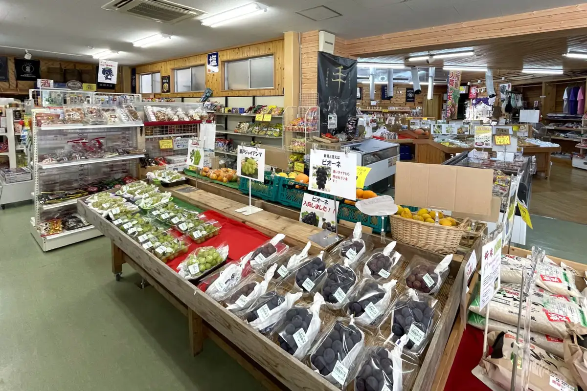
Stay
新見ビジネスシティーホテル
Nimi Business City Hotel
Hotel in Takao, Niimi with business travelers.
新見 グランドホテルみよしや
Nimi Grand Hotel Miyoshiya
Hotel in Takao, Niimi with business travelers; 1-minute walk from Nimi Station.
グリーンミュージアム 神郷温泉
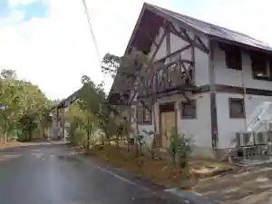
Gurinmyujiamu Shingo Onsen
Inn at Shingo Onsen in Shingotakase, Niimi with family-friendly stays.
新見千屋温泉 いぶきの里
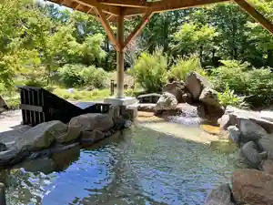
Nimi Senya Onsen Ibukino Sato
Inn at Nimisenya Onsen in Senyahanami, Niimi.
Dining
手打ち蕎麦とフレンチの やな木
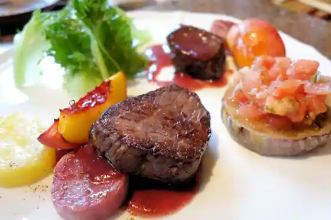
Teuchi Chi Soba To Furenchi No Yana Ki
焼肉 千屋牛
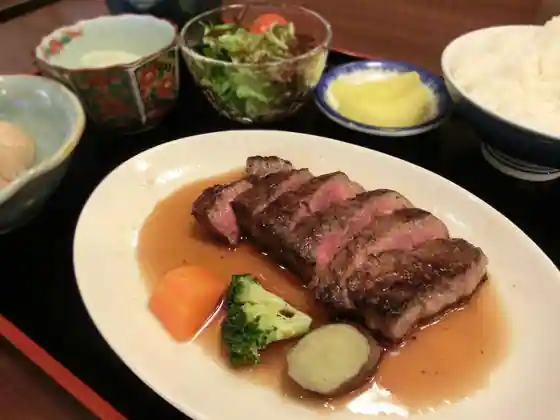
Yakiniku Senya Ushi
いんでいら
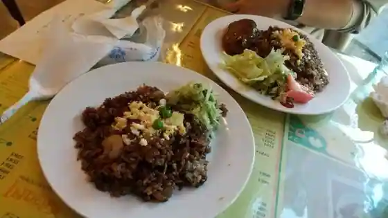
Indeira
タイム
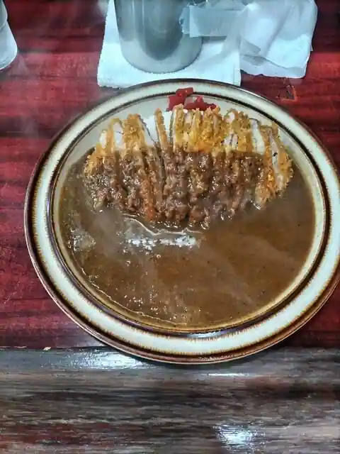
Taimu
新見ら～めん いぶき
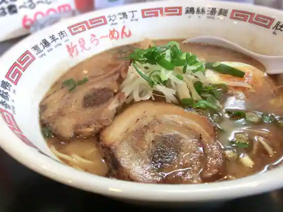
Nimi Ra ~ Men Ibuki
伯備
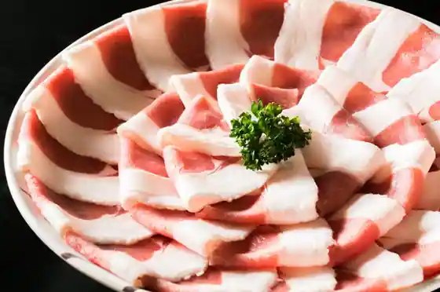
Hakubi
名代 中華そば 山金 新見店
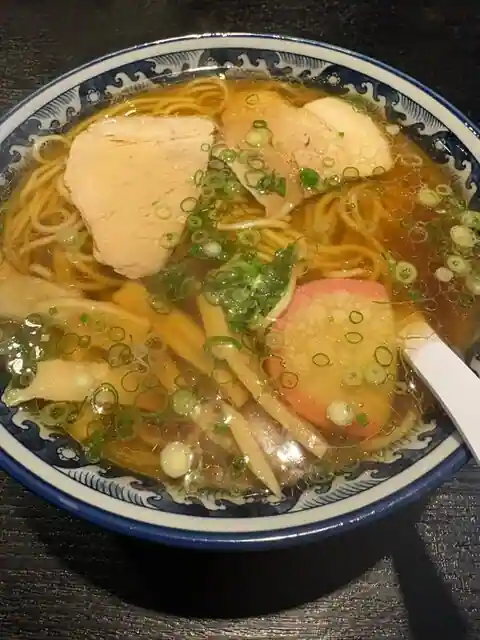
Myodai Chuka Soba Yama Kin Nimi
和牛レストラン ふゆさと
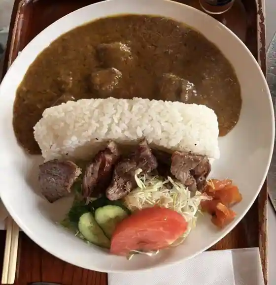
Wagyu Restaurant Fuyusato
頌山堂カフェ標
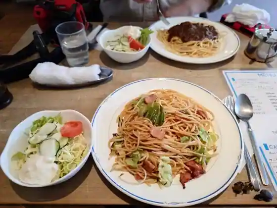
Sho Yama Do Cafe Shirube
こめ工房
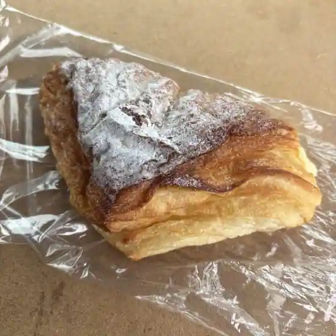
Kome Kobo
大佐サービスエリア(下り線) レストラン
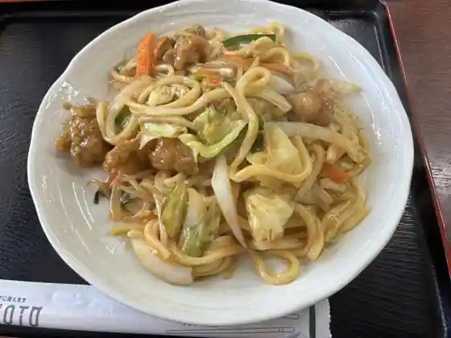
Taisa Sabisueria (Kudari Sen) Restaurant
ぽぱい
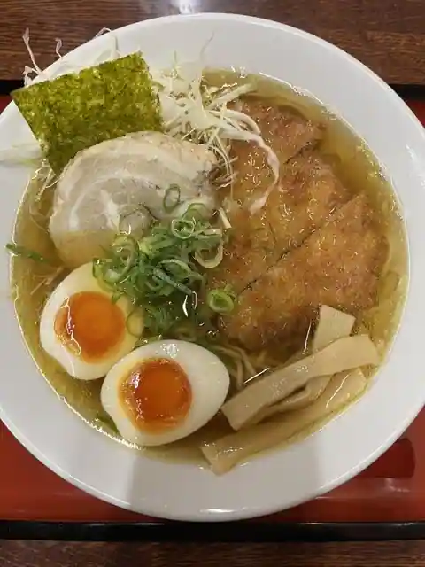
Popai
道の駅 鯉が窪
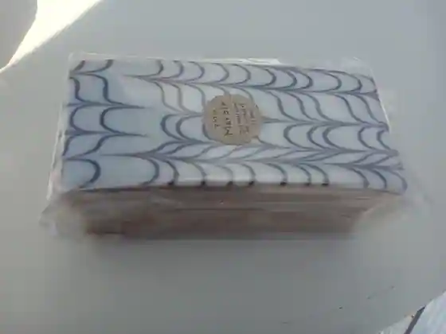
Michi No Eki Koi Ga Kubo
ドメーヌテッタ
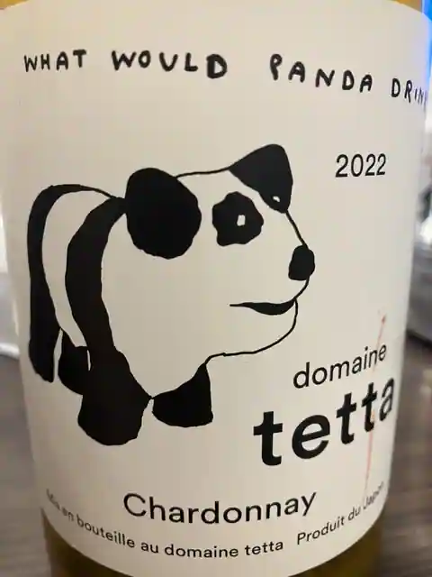
Domenutetta
くさまや
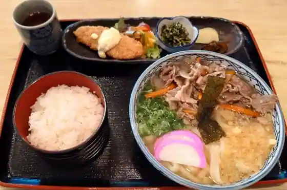
Kusamaya
大佐サービスエリア（上り線）レストラン
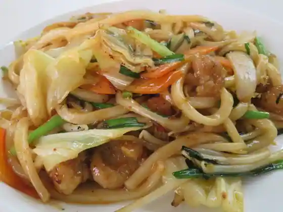
Taisa Sabisueria (Nobori Sen) Restaurant
哲多食源の里 祥華
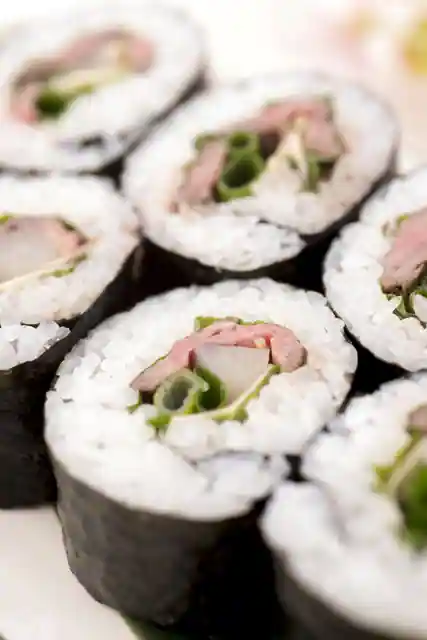
Tetsuta Shoku Gen No Sato Sho Hana
牛弘
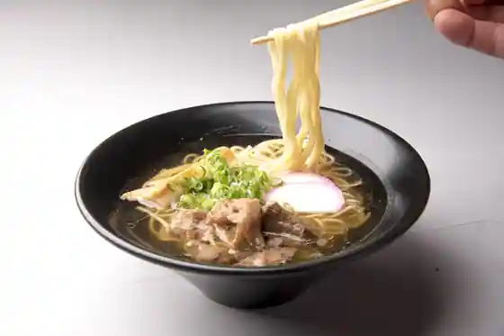
Ushi Hiroshi
焼肉 金山 新見店
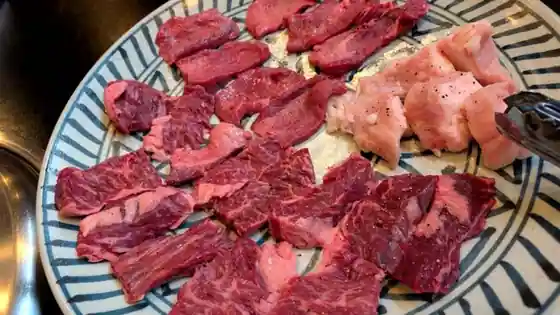
Yakiniku Kanayama Nimi
ノア
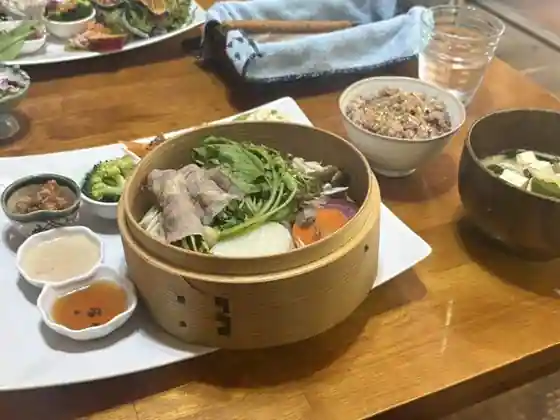
Noa
中国料理栄華楼
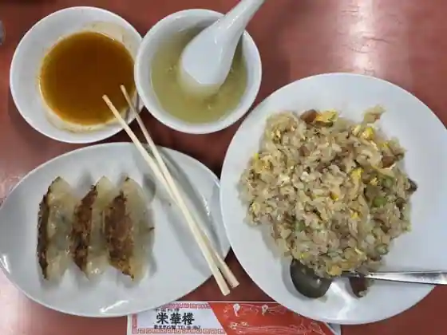
Chugokuryori Eiga Ro
Romi
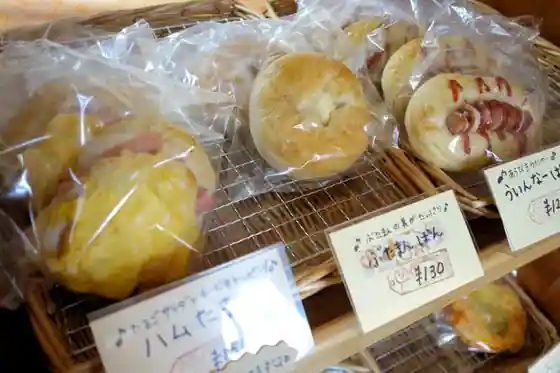
Romi
新菜苑
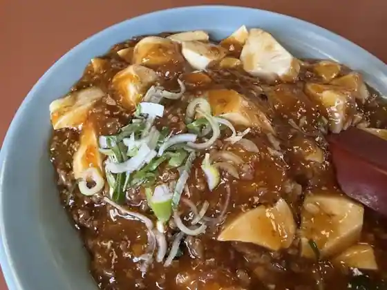
Shin Na En
Sights
Man Ki Hora
Ikura Hora
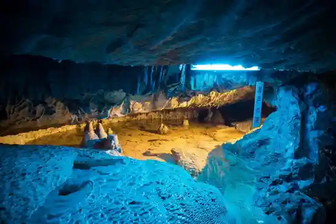
Ohara Kanko Orchard
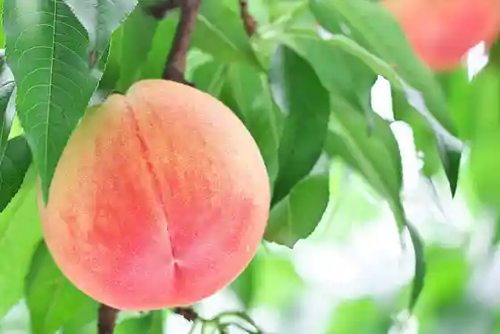
Rashomon
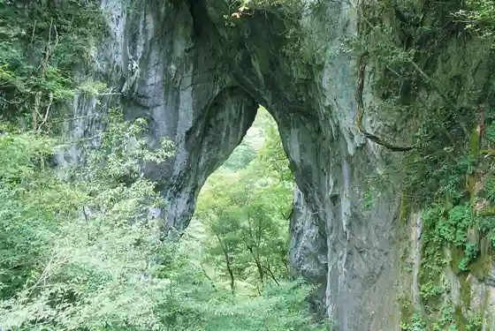
Yume Suki Park
Sumi Watari Tera
Roadside Station Koigakubo
Ikura Kyo
JA Hare no Kunioka Yama Ashin Plaza
Ten'o Hachiman Shrine
Koigakubo Marsh
Arato Shrine
Niimi Ikoi Tofureai no Park
Ibuki Village Tatara no Mori Oto Campground
Taisa Yama
Niimi Bosai Park
Senya Dam
Niimi Tami Sports Park (Mansaku Sports Park)
Ariimoningu
Kinu Kakari Falls
Niimi Tourist Information (Niimi Tourism Association)
Guriin Museum Shingo Onsen
Kuboi no Campground
Karusuto Sanso Lookout
Niimi Goten Town
Autodoa Tengoku
Kosaka Bu Kawa Dam
Ibuki no Sato Ski Area
Furutsukantorii Kumano
Rashomon Sakura Park
Niimi Art Museum
Sanko Masamune
Kawamoto Dam
Rashomon no Himebotaru
Osa Genryu Park
Osa Neicha Club
Bessho Autodoasupotsu Center
Shiroyama Park
Takase Kawa Dam
Mimuro Kyo
Koigakubo Shitsugen Museum
Niimi Goten Town Machi Aruki Gaido no Kai
Senya no no Sato Himawari Hatake
Mimuro Kawa Dam
Suzuran no Sono
Kajitsu no Gokujo Mizu
Narutaki
Inoshishi Furai Art Museum (Niimi Ho So Togei Kan)
Cho Castle Ruins
Hokoku Iori
Mansaku Sono
Yamada Hokoku Memorial Museum
Yo Sato Rindo (Shichi Magari)
Yagami Eki no Gyoi Kizakura
Toyotarentariisu Okayama Niimi Ekimae Mise
O Hora Gorge